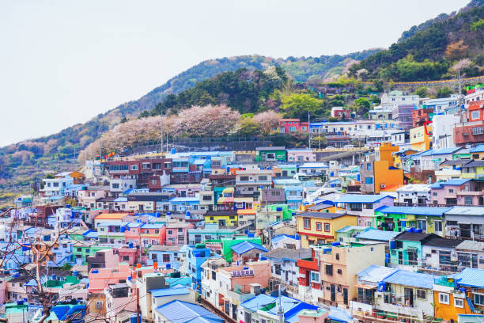
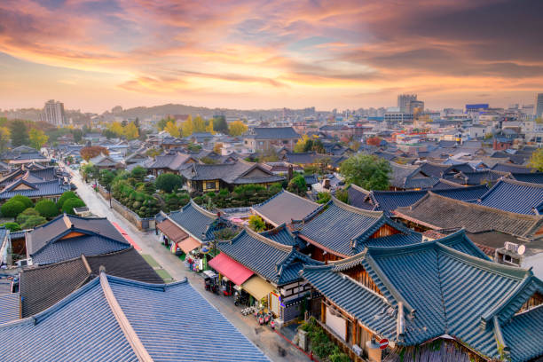
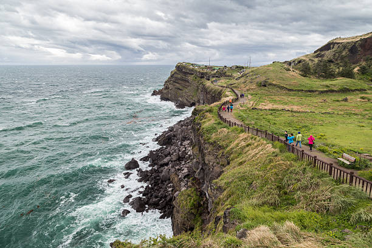

About Us
About
Seoul’s 25 districts, each with its own distinct personality, make up this booming 24-hour megacity. Here are 5 things you should know about us!
Seoul’s 25 districts, each with its own distinct personality, make up this booming 24-hour megacity. Here are 5 things you should know about us!
Top of any bucket list in Seoul has to be the truly delicious and diverse food scene. Follow the office workers to underground food courts at midday for a casual lunch of bibimbap, a sizzling bowl of rice, vegetables, egg, and chilli paste. Enjoy an evening meal at a "chicken and beer" joint, where fried or fire-roasted chicken is served atop sizzling nurungji (crispy rice), or Korean barbecue. Bring an empty stomach to "Gogi-jip", as it’s known locally, where prime cuts of beef or pork are cooked at your table, accompanied by seemingly endless side dishes.
Should you be in need of a night-time snack, follow your nose to the street food stalls of Gwangjang Market. Stewed pig trotters and snouts, gimbap (rice, veggies and ham wrapped in rice and rolled in sheets of seaweed) and bindaetteok (plate-sized crispy pancakes of crushed mung beans and veggies fried on a skillet) are all washed down with copious amounts of makgeolli and soju (local liquors).
Your visit to Seoul will be accompanied by a nonstop K-Pop beat, but if you're looking for more, walk the K-Star Road, a street dedicated to stars of Korean pop culture. Delve deeper by heading west to Yongma Land, the abandoned theme park where girl group Crayon Pop’s music video Bar Bar Bar was filmed, or take a K-Pop studio dance class to learn the latest choreography trends. While in noraebang (karaoke rooms), wannabe K-Popsters can belt out the latest hit tunes.
South Korea has a cutting-edge wellness and beauty industry, and high-end K-Beauty treatment spas can be found throughout Seoul. Nothing compares, however, to the experience of the massive jjimjil-bang bathhouse and sauna complexes. At Dragon Hill Spa you can scrub, sweat, shiver, bathe, and nap in a variety of healing rooms. Be aware: in the bathing areas, nudity and sex segregation are strictly enforced.
First constructed in 1395, Gyeongbokgung was the main royal palace of the Joseon dynasty. Its destruction, rebuilding, and restoration tells the story of Korea’s history in the centuries since. Watch the changing of the guard ceremonies at the main entrance Gwanghwamun, then set aside at least half a day to do justice to the compound, which includes a couple of museums, ornamental gardens and some of Seoul's grandest architectural sights. Check to see what free guided English-language tours are available, or simply enjoy the impressive architecture.
It can be hard to go more than a few blocks without tripping over a shopping mall or market in Seoul, and whichever side of the river they live on, Seoulites love to shop. Outside of the usual retail boxes, sprawling Namdaemun Market is the largest in the country, while the quirky Free Market hosts young creatives as well as a variety of musical entertainment on Saturday afternoons. While in the COEX Mall, take a break from shopping to visit one of Seoul’s most Instagrammable locations, Starfield Library, which looks like a work of installation art. Grab a seat and read one of the 50,000 books creatively stacked on 43ft-high (13m-high) shelves, or get something to eat and people-watch from the second floor cafe.